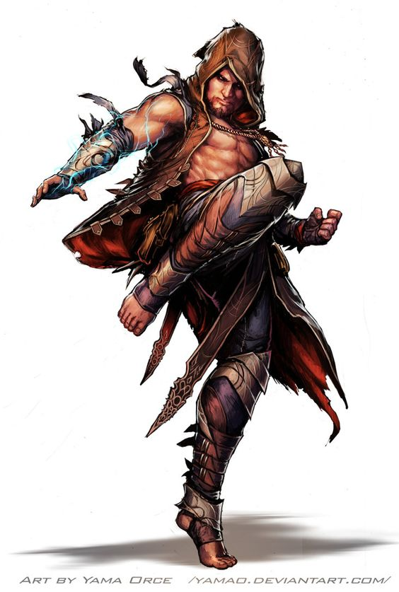

Seus punhos criam um borrão enquanto defletem uma revoada de flechas que vem vindo,
uma meio-elfa corre sobre uma barricada e se arremessa nas maciças fileiras de hobgoblins do outro lado.
Ela gira entre eles, distribuindo seus golpes e enviando-os para o chão, até que, finalmente, apenas ela está de pé.
Respirando profundamente, um humano coberto por tatuagens toma uma postura de batalha.
Quando os primeiro orcs em investida alcançam-no, ele exala e uma rajada de fogo é expelida de sua boca, engolfando seus oponentes.
Movendo-se com o silêncio da noite, uma halfling com vestes negras pisa em uma sombra embaixo de um arco e emerge
de outra mancha sombria numa sacada a poucos passos de distância. Ela desliza sua lâmina para fora da bainha de panos enrolados
e se esgueira através da janela aberto em direção ao príncipe tirano, tão vulnerável no abraço do sono.
Qualquer que seja suas disciplinas, os monges partilha de sua habilidade de aproveitar magicamente da energia que flui em seus corpos.
Se canalizada como um exibição impressionante de maestria do combate, ou como um foco mais sutil de habilidade defensiva e velocidade,
essa energia infunde tudo que um monge faz.
A MAGIA DO CHI
Monges fazem estudos cuidadosos da energia mágica que a maioria das tradições monásticas chama de chi.
Essa energia é um elemento da mágica que inunda o multiverso – especificamente, os elementos que fluem através dos corpos vivos.
Os monges atrelam esse poder dentro de si mesmos para criar efeitos mágicos e exceder a capacidade física de seus corpos,
e alguns dos seus ataques especiais podem bloquear o fluxo de chi nos seus oponentes. Usando essa energia,
os monges canalizam velocidade e força incríveis em seus ataques desarmados. À medida que eles ganham experiência,
seu treinamento marcial e sua maestria do chi lhe confere mais poder sobre seus corpos e sobre os corpos dos seus adversários.
TREINAMENTO E ASCETICISMO
Pequenos mosteiros murados se espalham pelas paisagens dos mundos de D&D, minúsculos refúgios do fluxo da vida comum,
onde o tempo parece parar. Os monges que vivem ai, buscam pelo auto aperfeiçoamento através de contemplação e treino
rigoroso. Muitos entram no monastério ainda crianças, enviados para viver lá quando seus pais morrem, quando não se
pode encontrar comida para mantê-los ou em troca de alguma gentileza realizada pelos monges a suas famílias. Alguns
vivem totalmente a parte da população ao seu redor, isolados de qualquer coisa que possa impedir o seu progresso espiritual.
Outros fazem um juramento de isolação, surgindo apenas para servir como espiões ou assassinos ao comando de seus líderes,
um nobre patrono ou outro poder mortal ou divino. A maioria dos monges não se afasta de sua vizinhança,
fazendo visitas frequentes a cidades ou vilas vizinhas e trocando seus serviços por comida e outros bens.
Como versáteis guerreiros, os monges, muitas vezes, acabam por proteger seus vizinho de monstros e tiranos.
Para um monge, se tornar um aventureiro significa abandonar um estilo de vida estruturado e comunal para se
tornar um viajante. Essa transição pode ser dura e os monges não a tomam de forma agradável. Aqueles que
abandonam seus mosteiros levam seus trabalhos a sério, conduzindo suas aventuras como testes pessoais de seu
crescimento físico e espiritual. Como uma regra, os monges pouco se importam com riqueza material e são guiados
por um desejo de cumprir uma missão maior, ao invés de meramente matar monstros e saquear seu tesouro.
CRIANDO UM MONGE
À medida que você criar seu personagem monge, pense sobre suas conexões com o monastério onde você aprendeu
suas perícias e passou os seus anos de formação. Você era um órfão ou uma criança deixada na entrada do monastério?
Seus pais prometeram você para o monastério como forma de gratidão por serviços prestados pelos monges?
Você ingressou nessa vida reclusa para se esconder de um crime que cometeu? Ou você escolheu a vida monástica por vontade própria?
Considere o porquê de você partir. O líder do seu monastério escolheu você para uma missão particularmente importante além do mosteiro?
Talvez você tenha sido expulso por violar algum das regras da comunidade. Você ficou devastado ao partir, ou ficou feliz ao sair?
Havia algo que você esperava concluir fora do monastério? Você estava ansioso para voltar pra sua casa?
Como resultado da vida estruturada de uma comunidade monástica e a disciplina necessária para dominar o chi,
os monges, quase sempre, tem um alinhamento leal.
Fonte: Vertente Geek